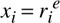

Networking Security Networking Security Networking Security Security Networking Security Networking Security Networking Charlie Kaufman Radia Perlman Mike Speciner Prentice Hall Network Security: Private Communication in a Public World, Second Edition Networking Security Networking Security Networking Security Security Networking Security Networking Security Networking Charlie Kaufman Radia Perlman Mike Speciner Prentice Hall Network Security: Private Communication in a Public World, Second Edition
24.2. NetWare V4
There were two major reasons for modifying security in Version 4 of NetWare. The first was to utilize public key cryptography, which has the potential to make theft of the server database less of a security issue. The other was to simplify management. Instead of having a database entry for Alice separately managed at each server Alice is authorized to use, NetWare Directory Services (NDS) stores Alice's security information, and servers retrieve the information from NDS.
Each user has an RSA key, but of course the user does not remember that. The user remembers a password. NDS stores Alice's private key encrypted with her password. To prevent off-line password guessing, Alice's workstation must prove knowledge of her password before NDS will transmit her encrypted private key. The pre-authentication phase, where her workstation proves it knows her password, is similar to NetWare V3. NDS stores a hash of Alice's password and salt. In V3 we said the salt was useful because it made the hash of Alice's password different on different servers. That case does not apply for V4 since Alice's entry is only stored in one placeÂNetWare Directory Services. But the salt is still useful, since it means that an intruder who reads the directory service database has to conduct separate dictionary attacks against each account.
First Alice logs into the workstation by typing her name and password. The workstation then authenticates on Alice's behalf to NDS in order to obtain Alice's private key. For security as well as performance, once the workstation acquires Alice's private key from NDS, it converts it into a temporary Gillou-Quisquater (GQ) key (see §24.2.1 NetWare's Guillou-Quisquater Authentication Scheme) and then forgets her password and private RSA key.
Authentication with GQ is public key authentication, but there are two important differences from authenticating with RSA.
A private RSA key lasts forever. A GQ key, as NetWare uses it, expiresÂthe workstation determines when the GQ key should expire when it creates the GQ key from the RSA key. If some untrustworthy software steals Alice's password or private RSA key, it can impersonate her forever (or until she notices what has happened and changes her long-term private key). Conversion to a GQ key limits the amount of time in which damage can be done. Note that this is the same reasoning that led the Kerberos designers to introduce the concept of a TGT and session key for the user rather than using the user's master key throughout a session. GQ authentication is faster than RSA for the client (Alice, the thing proving her identity) but slower for the server (Bob, the thing authenticating Alice). The NetWare designers envisioned slow PCs for clients and fast PCs for servers.
NetWare could have implemented the conversion of the long-term secret into a short-term secret differently. Rather than generate a GQ key pair, the workstation could choose a new RSA key pair, generate a certificate for it by signing it with the user's long-term private RSA key, and then forget the user's long-term secret. That is what DASS does, as we'll see in §24.4 DASS/SPX. But generating a temporary GQ key is much faster than generating an RSA key, so the NetWare scheme has higher performance during login.
Once the workstation has acquired a GQ key for Alice, it stores it for the duration of her session and uses it to authenticate on her behalf to any servers she accesses during her session.
If Alice asks to log into server Bob, then Bob must retrieve Alice's public RSA key from NDS. Alice's temporary GQ key works with her permanent public RSA key, in the sense that a signature generated with her temporary GQ key is verified using her permanent public RSA key.
To summarize, the information stored for Alice in NDS includes
Here is the protocol in which Alice's workstation obtains her encrypted private RSA key from NDS:
First Alice logs in and her workstation communicates with NDS in order to obtain her private RSA key, which her workstation will use to generate a finite-lifetime GQ key for her:
Alice types her name and password to her workstation. The workstation uses that information to authenticate Alice on her behalf to NDS, in an authentication exchange nearly identical to NetWare V3, except for the final message of the pre-authentication. The final message in V3 consists simply of Y, which is hash(X,R), where R is the challenge transmitted by the server. In V4, in addition to transmitting Y, the workstation transmits a large random number R2 (chosen by the workstation), which will be used by NDS for concealing NDS's reply to the workstation from eavesdroppers. The entire message (Y and the random number R2) is encrypted with the NDS's public key. Encrypting the message with NDS's public key means that an eavesdropper cannot use Y and R to verify password guesses off-line (as it could in V3). Once NDS is assured that the workstation knows Alice's password, NDS transmits Alice's encrypted private RSA key to the workstation. To prevent off-line password guessing by eavesdroppers, the encrypted private RSA key is  'd with the random number R2 sent in the previous step, and then encrypted with Y. 'd with the random number R2 sent in the previous step, and then encrypted with Y. The workstation decrypts Alice's private RSA key. It immediately turns it into a GQ key with an expiration time, and then forgets the password and private RSA key.
Here is what occurs when Alice accesses a network resource, say a server named Bob.
Alice asks to log into Bob. Bob obtains Alice's public key from NDS. Alice is authenticated in a public key authentication handshake in which the workstation uses Alice's GQ key and Bob uses her public RSA key. A session key is also established as part of the authentication handshake between the workstation and Bob, and that session key is used to integrity-protect the initial portion of each of the packets of the Alice-Bob exchange (just like in V3).
24.2.1. NetWare's Guillou-Quisquater Authentication Scheme
NetWare V4 authentication is not based on RSA, but rather on a variant of an algorithm by Guillou and Quisquater. We'll call NetWare's variant GQ. GQ requires that each user have an RSA key pair. The user's private RSA key is used to generate a private GQ key with a temporary lifetime. Then the workstation forgets the user's private RSA key, and future authentication is done using only the GQ key and the user's public RSA key. The GQ key can only do signatures (it can't encrypt or decrypt). Signature verification uses the public RSA key.
This is how the workstation acquires a private GQ key for the user:
The workstation acquires the user's private RSA key. The workstation generates a message, m0, which includes the validity interval for the GQ key it is about to create. The workstation signs m0 with the user's private RSA key. This signature of m0 is the user's private GQ key, Q. The workstation must not divulge this quantity. The workstation forgets the user's private RSA key, but remembers m0 (which is used, together with the user's public RSA key, to verify a GQ signature) and Q (the RSA signature on m0).
This is how the GQ key is used to sign a message:
To sign a message, say m, the workstation needs to know Q, m, and the user's public RSA key. These quantities are all fed into a magic function that outputs a signature. As used by NetWare, m is the challenge supplied by the server. The signature verification function requires as input m, the signature on m, m0, and the user's public RSA key. With these inputs, the signature verification function decides whether or not the signature is valid.
The mathematics involved are ugly and unintuitive, but we'll document them here for completeness. We'll describe the mechanics, but to understand why it's secure, you should read [GUIL88].
The user's RSA key pair is <e,n> for the public key, and <d,n> for the private key. Q = m0d mod n is the RSA signature on m0.
To sign a message m, do the following:
1. | Generate eight random numbers r1,...r8 in the range [2, n-2].
| 2. | Compute eight quantities x1,...x8, where

mod n.
| 3. | Compute MD4(m|x1|x2|...|x8).
| 4. | Break the 128-bit message digest computed in the previous step into 8 16-bit quantities and call the pieces c1,...c8.
| 5. | Compute eight quantities y1,...y8, where
mod n.
| 6. | The GQ signature of m consists of x1,...x8, and y1,...y8.
|
To verify the GQ signature of m, do the following:
1. | Receive m0, m, x1,...x8, and y1,...y8.
| 2. | Reliably find the user's public key <e,n>.
| 3. | Compute MD4(m|x1|x2|...|x8).
| | | 4. | Break the 128-bit message digest computed in the previous step into 8 16-bit quantities and call the pieces c1,... c8. | 5. | Accept the signature if for each i,
mod n.
|
Why does this work?
 mod n (this is how yi got computed in the signing algorithm)
mod n (this is how yi got computed in the signing algorithm) |
mod n |
mod n (this is how xi got computed in the signing algorithm) |
mod n, so Qe = m0 mod n |
mod n, which is what is being tested |
|